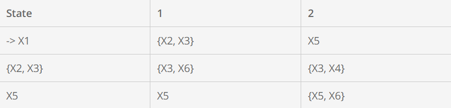
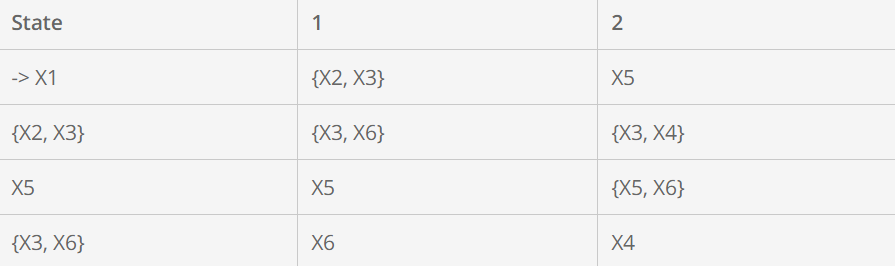
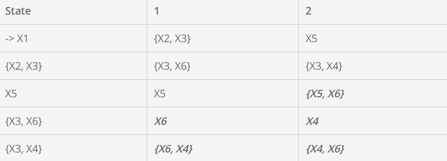
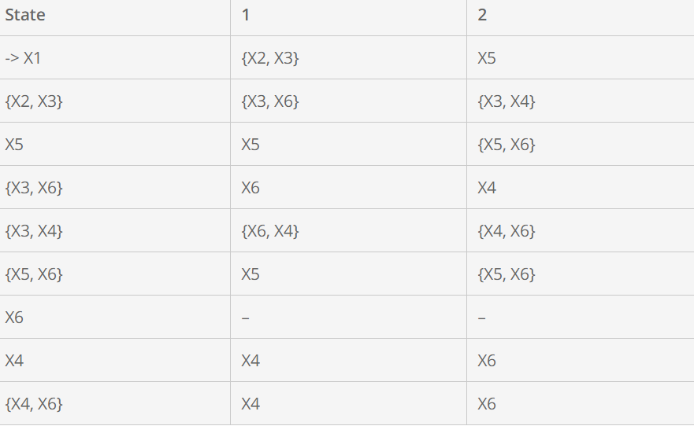
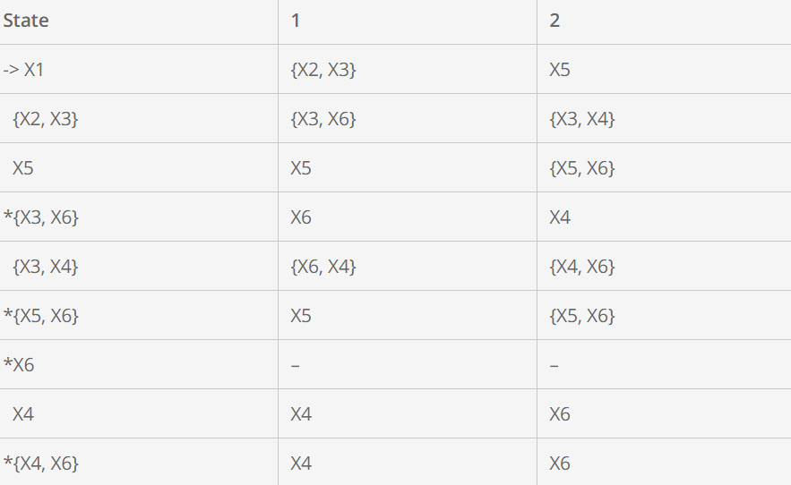

Andi Andhika
Mahasiswa | D121181511 | Founder of Villa Bukit Hijau Malino
Mahasiswa | D121181511 | Founder of Villa Bukit Hijau Malino
Setelah mencari transisi untuk state {X2,X3} berikutnya adalah mencari transisi dari X5 (hasil dari transisi X1 jika diberikan input 2). Karena state X5 adalah 1 state sendiri di NFA juga maka hasil transisi dari X5 di DFA akan sama dengan transisi di NFA.

Jika kita lihat tabel transisi DFA saat ini sudah ada 3 state yang kita cari transisinya yaitu X1, {X2,X3} dan {X5}. Kita lihat bahwa state {X2,X3} jika diberikan input 1 maka akan menuju ke state {X3, X6} dan seperti penjelasan sebelumnya bahwa di DFA tidak diijinkan untuk memiliki transisi lebih dari 1 untuk input yang sama, maka kita akan menganggap bahwa state {X3, X6} adalah sebuah state (State baru lagi). Demikian juga untuk state {X3, X4} merupakan sebuah state hasil dari transisi {X2, X3} jika diberikan input 2. Langkah berikutnya kita akan mencari transisi dari state {X3,X6} dan {X3,X4}.
Transisi X3 jika diberikan input 1 adalah X6 dan transisi X6 jika diberikan input 1 tidak akan menuju state manapun sehingga transisi dari state {X3, X6} untuk input 1 adalah X6 saja. Transisi X3 jika diberikan input 2 adalah X4 dan transisi X6 jika diberikan input 2 tidak akan menuju state manapun sehingga transisi dari state {X3, X6} jika diberikan input 2 adalah X4 saja.

Transisi X3 jika diberikan input 1 adalah X6 dan transisi X4 jika diberikan input 1 adalah X4 sehingga transisi dari {X3,X4} jika diberikan input 1 adalah {X6, X4}. Transisi X3 jika diberikan input 2 adalah X4 dan transisi X4 jika diberikan input 2 adalah X6 sehingga transisi dari {X3,X4} jika diberikan input 2 adalah {X4, X6}.

Proses pencarian transisi akan terus berulang sampai seluruh state sudah memiliki transisinya. Bisa dilihat pada tabel diatas untuk saat ini kita sudah memiliki 5 buah transisi state namun masih ada state yang belum ada transisinya ( yang ditandai dengan highlight kuning). Maka langkah berikutnya adalah kita masih perlu mencari transisi untuk state {X5, X6}, X6, X4, dan {X4,X6}. State {X4, X6} adalah sama dengan state {X6, X4} karena itu hanya penamaan saja yang terpenting adalah himpunan statenya tetap sama.
Setelah pencarian semua state maka akan diperoleh tabel transisi DFA sebagai berikut.

Final state pada DFA adalah state di DFA yang mengandung final state di NFA. Pada contoh final state di NFA adalah X6, sehingga semua state di DFA yang mengandung state X6 menjadi final state di DFA.
